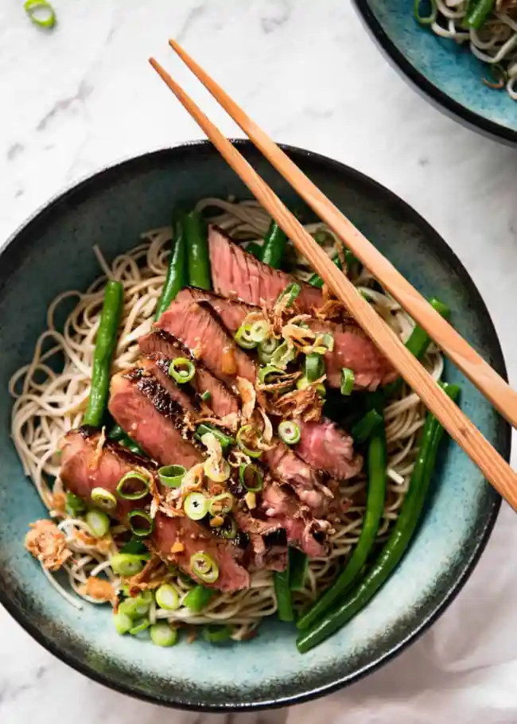

Beef Soba

A seriously tasty bowl of noodle goodness! These Beef Soba Noodles are dressed with a fantastic dressing reminiscent of traditional Japanese soba sauce. Quick to make, you'll have this on the table in just 15 minutes.
INGREDIENTS
Dressing
- 1 1/2 tbsp soy sauce, light or ordinary (Note 1)
- 2 1/2 tbsp peanut oil
- 3 tbsp rice vinegar (Note 2)
- 1 tbsp mirin (Note 3)
- 2 tsp brown sugar
- 2 tsp ginger, minced
- 1 clove garlic, minced
Steak
- 200g/7 oz rump or sirloin beef steak, excess fat trimmed (Note 4)
- 1 tsp vegetable oil
- 6oz/180g soba (Note 5)
- 6oz/200g green beans, trimmed
- 1 scallion/shallot, finely sliced
- 1 tbsp crispy Asian Shallots (Note 6)
INSTRUCTIONS
- Take the steak out of the fridge 30 minutes prior to cooking (or 15 minutes if it's a stinking hot summer day).
- Combine dressing ingredients in a jar and shake.
- Heat the oil in a skillet over high heat until smoking, then cook the steak to your liking. I like mine medium rare - perfect for absorbing the flavours of the delicious dressing - so I cook this rump steak for 2 minutes on the first side and 1 minute 45 seconds on the second
- Transfer to a plate and loosely cover with foil. Rest for 5 minutes, then slice into fairly thin slices against the grain (i.e. find the direction of the fibres then cut at a 90 degree angle straight through them).
- Meanwhile, bring a pot of water to boil. Cook the soba according to packet instructions (usually 5 minutes). For the last 1 minute of cooking, add the green beans.
- Drain the noodles and beans and rinse under cold water to stop them from cooking further and to cool the noodles. Roughly separate beans from noodles.
- To serve, divide the noodles between 2 bowls, top with the beans then the steak slices. Drizzle with the dressing (over the steak and noodles), then garnish with shallot slices and Crispy Asian Shallots.